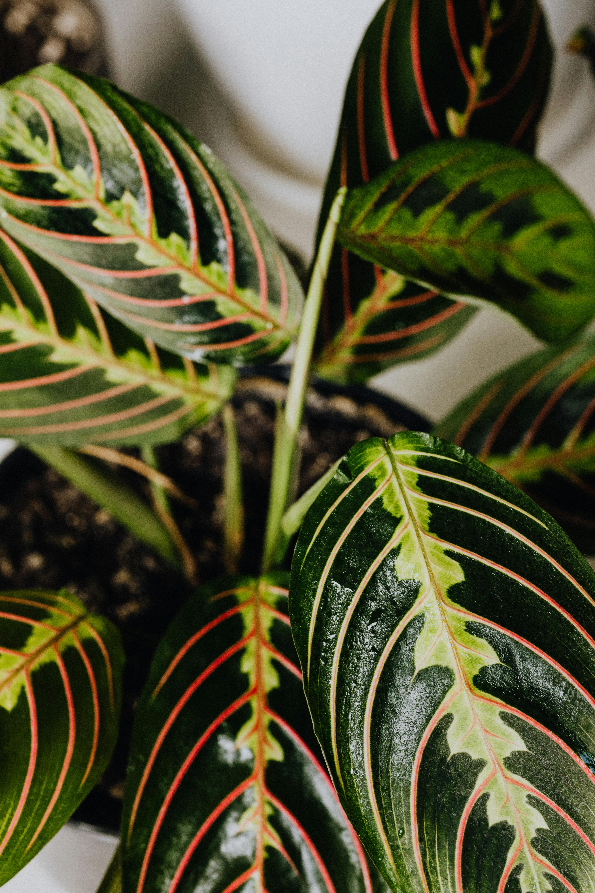

Prayer Plant
Description
The Prayer Plant (Maranta leuconeura) is a striking, low-maintenance houseplant known for its unique, colorful foliage and fascinating behavior. The plant's oval-shaped leaves are decorated with intricate patterns of dark green, light green, red, and purple, creating a beautiful contrast.
Prayer Plant
Care
They grow slowly, so you won't need to worry about constant maintenance.
- Light: Prefers bright, indirect light.
- Watering: Keep the soil consistently moist but not soggy.
- Soil: Well-draining potting mix is ideal
Feed with a balanced, diluted fertilizer once a month during the growing season (spring and summer). Additionally, trim back any dead or damaged leaves to maintain its tidy appearance.
Fun Fact
One of the most interesting features of the Prayer Plant is its ability to "pray" – its leaves fold up at night, as if in prayer, and open up again during the day, responding to the light.
More Research
Some articles to help further your independent research: